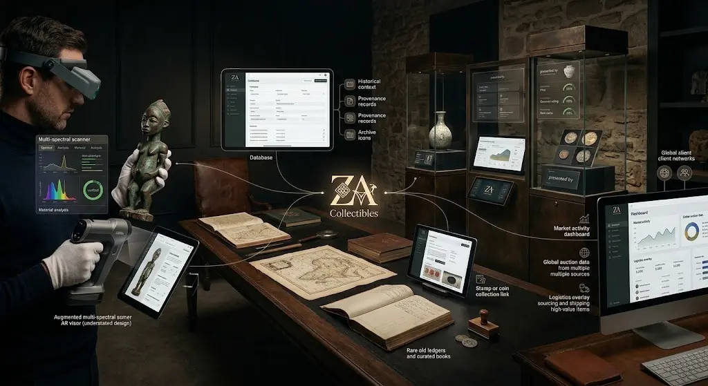
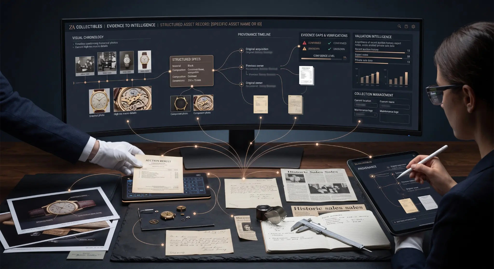
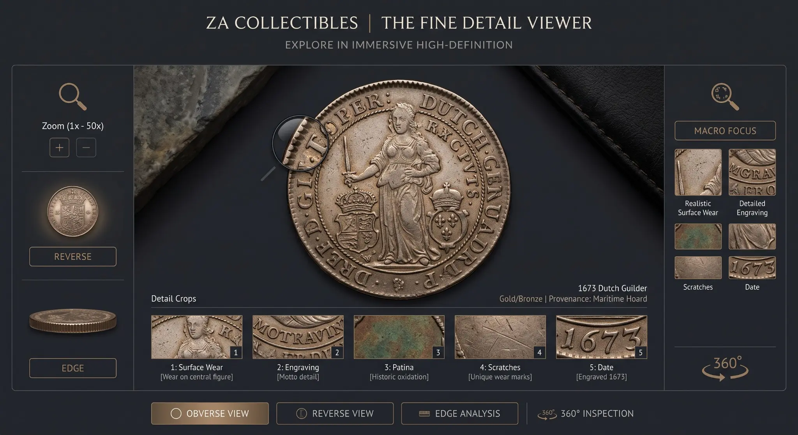
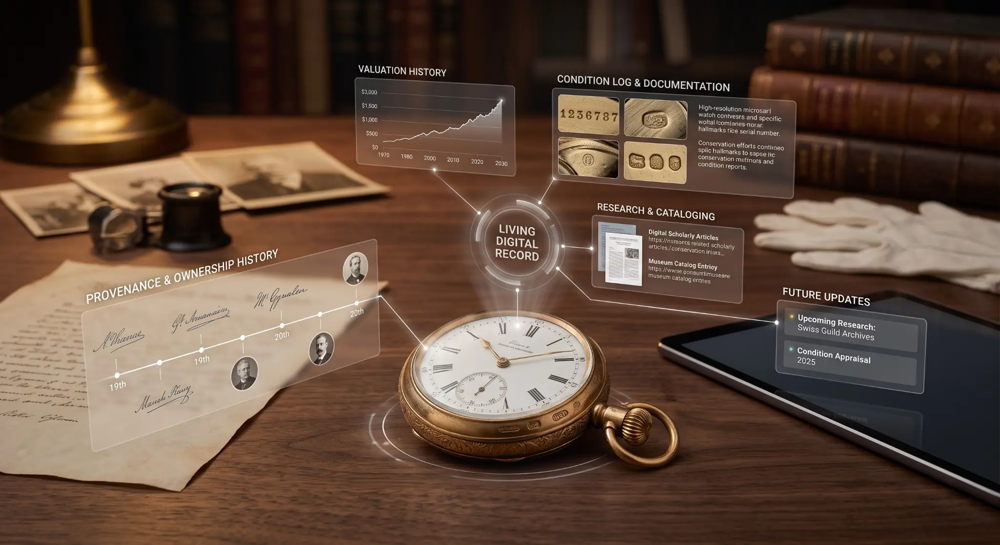
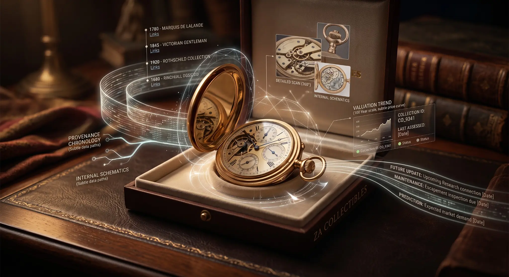

Photograph It.
Understand It.
Build on It.
AI-assisted collection intelligence designed to turn a few photographs into a useful beginning: probable identification, value triage, collection structure, living provenance and the next action worth taking.
Not “What Is It Worth?”
First: “What Might This Be?”
Most people do not need a definitive valuation at the front door. They need help finding the objects that justify attention. The system creates a provisional map, shows why an item may matter and directs the user towards research, expert assessment, sale, sourcing or presentation only when the evidence supports it.

A Better Beginning for Every Collection.
Take a few ordinary photographs.
Receive a probable object, period and category.
Separate likely interest from common material.
See whether formal pricing is worth pursuing.
Find patterns, duplicates and missing pieces.
Research, share, source, sell or preserve.
Find the Valuable Decisions Hidden Inside the Volume.
An inherited cabinet may contain hundreds of ordinary objects, a handful of genuinely important pieces and dozens that remain impossible to judge from one photograph. The system does not force a price onto everything. It creates a decision map.
- Group probable matches by period, maker, material and theme
- Identify duplicates, missing evidence and collection gaps
- Separate catalogue-only material from priority research candidates
- Create shareable registers, insurance exports and sourcing briefs
Closest coherent collection: British & Commonwealth Campaign Medals, 1899–1945
11 of 14 core types identified · three sourcing gaps · two duplicate trade candidates

The Image Becomes an Investigation Surface
Zoom from the whole object into edge, date, engraving, patina and damage. Save observations against the exact region, compare views and request the single additional image most likely to change the answer.
The Assessment Does Not Die in a PDF
Provenance, condition, research, valuation evidence and future actions remain attached to the object. New evidence can improve the record without erasing the uncertainty that existed before.


Find the Signal Without Pricing Every Object.
The system does not pretend that a photograph replaces physical inspection. It does something more immediately useful: identifies which items look ordinary, which remain uncertain and which may justify professional assessment.
The Intelligence Layer for Objects With History.
Identification is only the opening move. ZA Collection Intelligence connects the object to expertise, market routes, research, sourcing, collection building and preservation.
Register Early Interest →